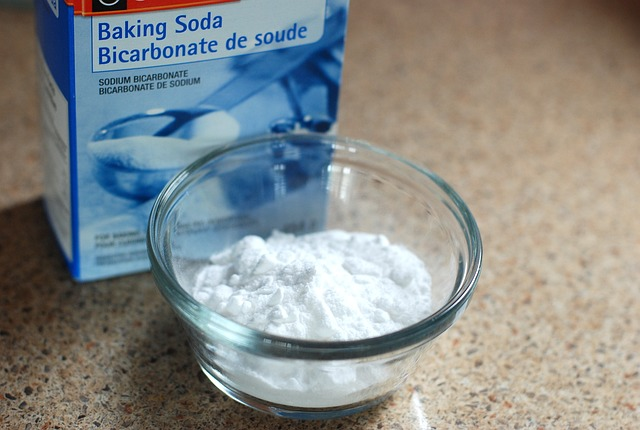

Soda, also known as carbonated soft drinks or fizzy beverages, is a type of flavored beverage that contains carbonated water,
sweeteners, and various additives. Here's some information about soda in terms of carbohydrates and how to consume it:
1. Carbohydrate content: Soda is primarily made up of water and sweeteners, which provide carbohydrates in the form of sugars. The exact
carbohydrate content can vary depending on the brand and type of soda. On average, a 12-ounce can of regular soda contains around 38-45
grams of carbohydrates, with most of it coming from added sugars.
2. Nutritional profile: Soda is typically low in nutrients and can be high in calories and added sugars. It provides little to no nutritional
value and is often considered empty calories. Regular consumption of sugary sodas has been linked to various health concerns, including weight gain, tooth decay, and an increased risk of chronic diseases like type 2 diabetes and heart disease.
3. Drinking soda:
- As a refreshing beverage: Soda is often consumed as a refreshing and thirst-quenching drink. It can be served chilled or over ice.
- On its own: Soda is typically consumed directly from the can or poured into a glass. It is enjoyed for its effervescence and the
combination of flavors provided by the sweeteners and additives.
- Mixed with other beverages: Soda can be used as a mixer in various cocktails or combined with fruit juices or flavored syrups to
create unique beverage combinations.
- Served with meals: Some people enjoy soda as a beverage choice to accompany meals. However, it's important to note that regular
consumption of sugary beverages with meals can contribute to excess calorie intake and may not be the healthiest choice.
- Moderation and healthier alternatives: Due to the high sugar content and potential health risks associated with regular soda consumption,
it is generally recommended to limit or avoid it. Choosing healthier alternatives like water, unsweetened tea, infused water, or sparkling
water with no added sugars can be beneficial for overall health.
It's important to be mindful of your soda consumption due to its high sugar content and potential negative health effects. Opting for healthier
beverage choices can help reduce your intake of added sugars and improve your overall nutritional profile.